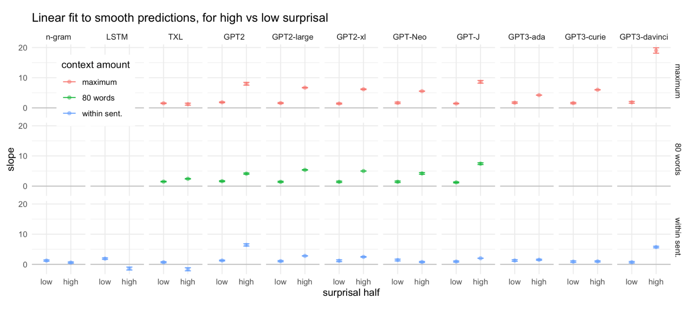

Processing time vs. surprisal
with better language models, the relationship is superlinear
Jacob Louis Hoover
MCQLL
25 Jan 2022
1: Background
Human processing time and predictability
Processing time is related to incremental predictability.
- General relationship: less predictable words take more time to process (e.g. Ehrlich and Rayner 1981; Balota et al. 1985). We can write: \text{cost}(w) = f( p(w | \text{context}))
- What is linking function, f? Influential “surprisal theory” (Hale 2001; Levy 2005, 2008; Smith and Levy 2013) proposes cost is linear in surprisal: \text{cost}(w) \propto -\log p(w | \text{context}) \triangleq \mathrm{surp}(w)
Surprisal theory
Empirical studies
response: human processing cost:
- gaze duration
- self-paced reading time
predictor: incremental surprisal:
- from language models
Using 3-gram surprisal estimates (Smith and Levy 2013):
Looks linear.
Smith and Levy (2013) used (then state-of-the-art) 3-gram language models.
- careful study; found linear relationship
Smith and Levy (2013, fig. 1)
Following literature has introduced newer language models (larger n-grams, LSTM, Transformer-based)
- a number of studies assume linear relationship (e.g. Aurnhammer and Frank 2019), and use Linear Mixed Effects (LME) models
- find evidence of a (near-)linear relationship (Goodkind and Bicknell 2018; Wilcox et al. 2020; Boyce and Levy 2020)
- also use LME for analysis
- the better the language models, the better the fit (predictive power)
However
Reasons to question the conclusion that processing linear in surprisal
- theoretical
- empirical
Theoretical reasons
Surprisal theory is motivated by a computational level argument.
“Highly-incremental processing” argument outline:
- suppose there is function f: predictability \to processing cost
- some item’s probability p = p_1 p_2 \cdots p_n
- item’s cost f(p) = f( p_1 p_2 \cdots p_n ) = f( p_1 ) + f( p_2 ) + \ldots f( p_n )
- \implies f is logarithmic. That is, cost is linear in surprisal.
But, how is this accomplished? No associated algorithmic level theory.
What processing algorithm has runtime that is linear in surprisal?
… first question: what algorithms can depend on probability?
Sampling-based algorithms
Processing as sampling
Sampling-based algorithms
Idea:
- Distribution p(\cdot\mid w_{1:n}) of current hypotheses about complete structure conditioned on the partial input (n observed words).
- Processing model comprises of algorithm for sampling from this distribution
- Runtime of this sampler (how long it takes to successfully sample) would be a natural predictability-based model of processing difficulty
Sampling-based processing \implies cost exponential in surprisal
Processing as sampling
Sampling-based processing \implies cost exponential in surprisal
Incremental surprisal is a KL
Relative entropy of distribution before vs after seeing the next word precisely the incremental surprisal (Levy 2008, sec. 2.1) \mathrm{KL}( p(\cdot\mid w_{1:n+1}) \parallel p(\cdot\mid w_{1:n})) = -\log p(w_{n+1} \mid w_{1:n})
Expected sampling runtime is exponential in KL
runtime for a sampling conditional distribution exponential in KL \text{expected sampling runtime} \approx e^{[\mathrm{KL}( p(\cdot\mid w_{1:n+1}) \parallel p(\cdot\mid w_{1:n})]}
- straightforward proof for rejection sampling (e.g. Freer et al. 2010).
- importance sampling (Chatterjee and Diaconis 2017).
Exponential is definitely superlinear.
Processing as sampling
Surprisal theory predicts cost is linear in surprisal.
Sampling-based processing \implies cost exponential in surprisal
We don’t know of an algorithm where runtime scales linearly in surprisal.
Reason to ask: Is the empirical relationship between surprisal and processing cost superlinear?
Empirical reasons
Recent studies give reasons to question strictly linear linking function.
- Schijndel and Linzen (2018) examine garden path effects, and find
- a linear linking function can’t predict the magnitude of human increase in processing.
- In context of motivating uniform density hypothesis, Meister et al. (2021) examine whether nonlinear linking function may give better fit than linear.
- Using surprisal estimates from state-of-the-art Transformer-based language models, suggest superlinear shaped linking function.
Motivates a new study
Given reasons to reconsider linear linking function:
Theoretical: Lack of algorithmic theory of processing which is capable predicting of linear linking function
- sampling algorithms are superlinear
Empirical: Recent evidence suggesting superlinear linking function.
What is needed:
a study
- directly asking whether linking function is nonlinear
- using modern state-of-the-art language models
2: Methods
We want to revisit question of linking function.
- specifically: can we actually assume function is linear?
What tools do we have?
GAMs!
We fit penalized regression splines using generalized additive models (GAMs).
Motivation:
- they are the tool for the job
- don’t want to assume any particular parametric form (linear)
- want an interpretable regression model, like LME
Our study is different
use GAMs to explicitly compare linear and nonlinear fit, rather than as tool to verify qualitatively that relationship is ‘near-linear’ (Wilcox et al. 2020)
choices in specifying GAMs
GAMs?
Well-studied, flexible, interpretable tool for nonparametric regression.
Middle ground: Linear models — GAMs — black-box ML
\underbrace{\text{penalize underfit}}_\text{maximize lik/minimize err} \quad\text{and}\quad\underbrace{\text{penalize overfit}}_\text{minimize wiggliness}
GAMs?
\underbrace{\text{penalize underfit}}_\text{maximize lik/minimize err} \quad\text{and}\quad\underbrace{\text{penalize overfit}}_\text{minimize wiggliness}
\hat \theta = \arg\min_\theta \{ \overbrace{||\mathbf{y} - \mathbf{f}_\theta||^2} + \overbrace{\lambda\times\text{wiggliness}(f_\theta)} \}
\mathbf{f}_\theta = ( f_\theta(\mathbf{x_1}),f_\theta(\mathbf{x_2})\ldots,f_\theta(\mathbf{x_N}) )^T
Wigglinness penalty, for instance, \text{wiggliness}(f_\theta)= \int \left( \textstyle\frac{\mathrm{d}^n}{{\mathrm{d}}x^n}f_\theta(x) \right)^2 \mathrm{d}x
Penalty null space (functions not penalized): n=2 \implies linear functions
Fitting a GAM:
- for fixed \lambda, fit model to maximize likelihood/minimize error
- fit \lambda by e.g. cross validation
GAMs?
Fitting a GAM:
- for fixed \lambda, fit model to maximize likelihood/minimize error
- fit \lambda by e.g. cross validation
Bases
How to fit? Represent f_\theta(x) = \sum_{i} \theta_i b_i(x)
Basis for piecewise cubic functions, between “knots”.
General solution to minimize ||\mathbf{y} - \mathbf{f}_\theta||^2 + \lambda\times J_{md}(f_\theta)
Does not require knots. Thin plate regressions splines (TPRS) is low-rank approximation.

GAM theory
A GAM is just GLM but replace linear predictor with smooth function.
- smooth is a linear combination of basis functions.
- fit by penalized estimation, minimize loss = error + penalty
\mu = \beta_0 + \beta_1 x\\ y \sim \mathcal{N}(\mu,\sigma^2)
\mu = \beta_0 + \beta_1 x + \gamma z\\ y \sim \mathcal{N}(\mu,\sigma^2)
\gamma \sim \mathcal{N}(\mu,\sigma^2_z)
g(\mu) = \beta_0 + \beta_1 x\\ y \sim \mathrm{EF}(\mu,\phi)
g(\mu) = f(x)\\ y \sim \mathrm{EF}(\mu,\phi)
f(x) = \beta_0 + \beta_1 x + \textstyle\sum_j \theta_jb_j(x)
- nonlinear generalization of linear mixed-effects models
3: Our study
Data
Language models
Surprisal estimates from
- Huggingface pretrained GPT2-type models (4 different models), and stat-of-the-art OpenAI GPT3 (3 sizes).
- also 5-Gram, LSTM and TransformerXL.
Corpus
Self-paced reading data from Natural Stories corpus (Futrell et al. 2018).
Surprisals

Specifying our GAMs
Smooth effect of surprisal:
RT ~ s(surp, bs='tp', k=6) +
s(subj, surp, bs='fs', m=1) +
te(freq, len) +
s(prev_surp, bs='tp') +
s(subj, prev_surp, bs='fs', m=1) +
te(prev_freq, prev_len)- For nonlinear main effect: use thin plate regression splines basis (TPRS)
better allow us to examine differences in high surprisal area (less data)
not use high number of basis functions: limiting the max wiggliness*
simple question: given a few degrees of freedom, will the GAM use to bend curve upward?
- For by-subject effects: different curve per subject
- factor-smooth interaction basis
- penalty order m=1, so null space is just constant functions, penalizes divergence from main smooth
- Likewise effect of previous word
Linear effect of surprisal:
RT ~ surp + s(subj, bs='re') +
s(surp, subj, bs='re') +
te(freq, len) +
prev_surp +
s(prev_surp, subj, bs='re') +
te(prev_freq, prev_len)Main effect: linear
By-subject linear random effects: a random slope and intercept per subject (in
mgcv, a random linear effect can be obtained with smooth basiss(x,y, bs='re')\equivx:y-1)
4: Results
GAM fits
As a rougher way to look at this: get overall slope of the smooth, in
high surprisal area (higher half of surprisal values)
low surprisal area (lower half)

As a rougher way to look at this: get overall slope of the smooth, in
high surprisal area (higher half of surprisal values)
low surprisal area (lower half)
get difference (high slope - low slope).
Difference in fit vs LM quality
Psyhometric predictive power Previous literature notes:
- better LM \implies better fit
We find possible evidence
better LMs are more superlinear.
effect of context not very clear.
5: Conclusion
Superlinear linking function
Like previous literature
- Same dataset often used (TODO: more datasets, different psychometrics)
- Use GAMs to examine linking function
Different from previous studies
- we used (even) better language models
- more important: we compare linear and nonlinear fits
- we used GAMS to probe a specific question
- use thin plate regression splines basis
- model nonlinear by-subject effects
- limited max degrees of freedom in main effect
Find evidence linearity hypothesis is not justified: linking function is superlinear. Especially for best LMs.
Questions
Why only now?
Earlier work was good.
- Have to be using the latest, best, language models, and have to be looking for this.
- We have new tools, and we may have to revise our conclusions
Smith and Levy (2013, fig. 1)
Questions
What does it mean?
Have a model of human processing? \implies should scale superlinearly in surprisal.
Evidence for sampling-based model?
- Well, maybe. Shape doesn’t look exponential (unless with even better LMs we see this nonlinearity even more)
Why do older language models look more linear?
- Worse language models will overestimate surprisals. Is there structure to this overestimation? What kind of overestimation leads to linking function looking linear?